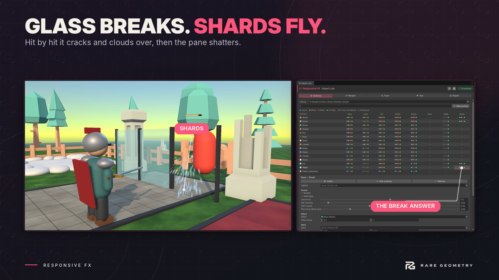

Hit feedback
Make every hit land. Add one Hit Feedback component to anything that can be hit, and every hit plays the whole reaction together: a damage number, a hit flash, hitstop, camera shake, knockback, squash, a health bar, a sound, sparks and, on the killing blow, a kill moment. Pick a genre preset for the right feel in one click, and when something doesn't play, the Why No Feedback? window tells you why in plain words, with a one-click fix.


What it does #
| Part | What it gives you |
|---|---|
| Hit Feedback | The one component. Hit it with one line of code, a UnityEvent, or the optional Health component. |
| Profiles and presets | Arcade, Action RPG, Souls-like, Cartoon, Shooter, Idle and Mobile, Minimal, plus one Juice slider. |
| Hit Recipe Studio | Design a hit as a moment: drag when the number, flash, shake, sound and sparks start for normal, critical and killing hits, and preview it. |
| Damage numbers | Kinds (normal, critical, heal, shield, miss, block, damage over time, status), four styles with critical bursts, combining, five motions, 1.2K formats, icons, Display as. Pooled, no garbage. |
| Hit flash | On meshes, skinned meshes and sprites, in Built-in, URP and HDRP, without changing your materials. |
| Hitstop, shake, knockback, squash | Target-only or global freeze, camera shake that never fights your camera, pushes for any kind of mover. |
| Health bars | Floating bars with delayed drain, shield and segments; a boss bar; a player HUD bar. |
| Player feedback | Damage vignette, direction arrows, low-health pulse, gamepad rumble. |
| Sound, particles, kill moment | Clips per kind, Responsive FX's own sparks and puffs, slow motion and pop on the kill. |
| Your own health script | The Hit Feedback Bridge watches your health value or is called from your events, with test buttons that prove it works. |
| Tools | Setup Wizard, Why No Feedback?, Scene Overview, live previews, Help and Support. |
Where to start #
- Quick start: hit feedback on your own enemy in five minutes.
- Demo scenes: an arena fight, a gallery of every preset, a 2D level.
- Why No Feedback?: when something doesn't play.
Compatibility #
Unity 6000.0.85f1 and newer Unity 6 versions. Built-in, URP and HDRP. 2D and 3D. Both input systems (Responsive FX itself reads no input; rumble uses the Input System package when it is installed). No package dependencies.